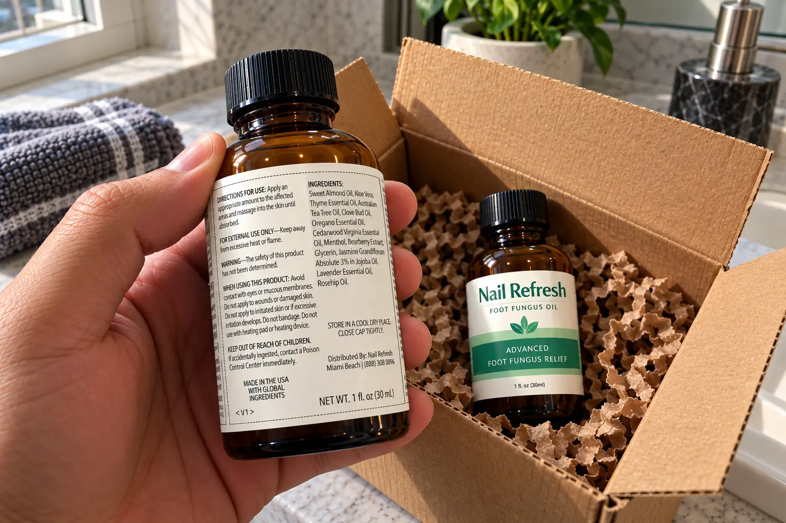
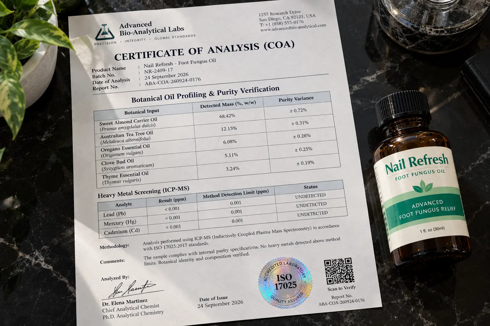

Nail Refresh Review (2026): Why 13 Oils Won't "Cure" Your Fungus (But Do THIS Instead)

📌 TL;DR: The Physical Audit Verdict
Is Nail Refresh a scam? No, but their marketing language is highly aggressive. The sales page talks about a "Fungal Force Field", which is a marketing buzzword. However, our audit of the physical bottle confirms that the 13-ingredient blend uses excellent, high-quality carrier oils (Sweet Almond, Jojoba) combined with scientifically recognized botanicals (Tea Tree, Thyme, Clove). It is NOT an FDA-approved drug that cures fungus. It IS, however, an exceptional conditioning oil that softens thick keratin and dramatically improves the cosmetic appearance of yellow, brittle nails over time.
If you have thick, yellow, brittle toenails and you are hoping a $69 bottle of essential oils will miraculously "cure" a deep-rooted fungal infection in two weeks, stop reading and go to a podiatrist immediately.
The nail fungus industry is filled with aggressive marketers promising overnight miracles. When we saw the sales page for Nail Refresh boasting about a "Fungal Force Field," we knew we had to step in. We acquired a physical bottle of this 1 fl oz (30 mL) topical oil to run a complete label breakdown.
We wanted to know: Is this just an expensive bottle of perfume for your feet, or is there actual botanical science behind these 13 ingredients? Here is what we found.
1. The Physical Label Audit: Oils vs. Drugs
Generic blogs will simply copy and paste the ingredient list from the website. At True Choice Insider, we verify the formula. The blend consists of 13 botanical oils, but to understand if it works, you have to separate the Carrier Oils from the Active Essential Oils.

🔬 Formula Breakdown: Penetration vs. Action
Fungus lives deep under the nail bed. Pharmacy creams fail because they sit on top of the hard keratin. Here is how Nail Refresh attempts to solve this via its botanical profile:
| Botanical Ingredient | Category | Investigator Analysis |
|---|---|---|
| Sweet Almond & Rosehip Oil | Carrier Oils | Crucial for delivery. They condition and soften the thick, damaged keratin, allowing the stronger oils to penetrate deeper. |
| Tea Tree & Oregano Oil | Active Essential Oils | The heavy hitters. Both contain powerful compounds (like carvacrol in Oregano) that have demonstrated strong antimicrobial properties in laboratory settings. |
| Aloe Vera & Glycerin | Skin Conditioners | Humectants that soothe the inflamed cuticles surrounding the infected nail, reducing redness and dry cracking. |
The Limitation: The label lists the ingredients, but it does NOT disclose the individual percentage ratios (e.g., how much Tea Tree oil vs. Sweet Almond oil). This makes it impossible to compare directly against clinical trials that use exact dosing.
Label Audit Complete. View Current Pricing Options Below:
Check Official Website Availability >>2. 🚨 The Brutal Truth: The Safety Warning
Most affiliates will hide this next part to secure a commission, but we found something highly significant printed directly on the label.
"The safety of this product has not been determined."
Yes, that is printed directly on the bottle under the "WARNING" section. And truthfully? This is actually a sign of an honest company following FDA guidelines.
Because Nail Refresh is an over-the-counter botanical oil and NOT an FDA-approved pharmaceutical drug (like Terbinafine or Tolnaftate), they are legally required to state this. Essential oils are powerful. If you apply them to broken skin or open wounds, they will burn and irritate. The brand is transparent about this, which builds trust compared to scam sites that promise "zero side effects."
3. Who Should Actually Use Nail Refresh?
We evaluated the formula against guidelines provided by authoritative dermatological sources. Here is who should buy it, and who should avoid it.
Who Should Buy It
- People with mild to moderate yellowing or brittle nail texture.
- Those looking to improve the cosmetic appearance of their toes.
- People who want to avoid the harsh liver damage associated with prescription oral antifungals.
- Individuals seeking a daily cuticle-softening routine.
Who Should Avoid It
- Anyone with a severe, painful, or bleeding nail bed infection.
- Diabetics or those with poor circulation (seek a doctor immediately).
- People with known allergies to Tea Tree or Clove oils.
- Those expecting a 7-day magic "cure."
4. ⚠️ The 180-Day Guarantee Discrepancy
Nail Refresh heavily advertises a 180-Day Money-Back Guarantee on their sales page. This is fantastic for reducing your purchase risk, as treating nails takes months.
However, during our research, we found previous versions of their policy page citing a 60-day term. While the checkout page currently honors the 180 days, you must remember one crucial fact: You have to ship the physical bottles back to their Miami Beach distribution center to get your money back. Do not throw away your empty bottles if you plan on requesting a refund.
5. Financial Verdict & The Proper Routine
The biggest mistake buyers make is purchasing a single bottle ($69), applying it for two weeks, and quitting when the nail isn't perfectly clear. Human toenails take 12 to 18 months to fully grow out and replace themselves.
- 2 Bottles: $138 (or $128 with discount)
- 3 Bottles: $177 (or $157 with discount)
- 6 Bottles: $234 (or $194 with discount) — Best Value at $32.33/bottle
🛡️ Our Purchasing Recommendation
Nail Refresh is not a magic drug. However, if you are committed to a daily routine, the Sweet Almond and Aloe will deeply hydrate the cracked keratin, while the Tea Tree and Oregano oils create a highly acidic environment where fungus struggles to survive.
Because nail turnover takes months, we highly recommend opting for the 6-bottle discounted package. It drops the price significantly to around $32 per bottle, gives you enough supply to last through the actual nail growth cycle, and is fully covered by the 180-day physical return policy.
Check Availability On Official Website >>